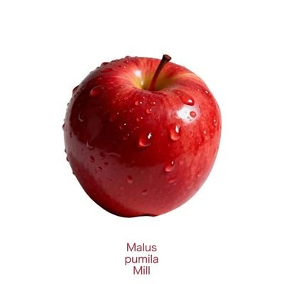

查拉图斯特拉.
@DQadopt
@VZSAYpDdYN54930 小鸟说我给你一个身份，我说什么身份，她说女朋友，我说那你就是我对象了？她说嗯嗯，我说好，那就别人问起来我就说我们在一起了，五一见面后再在平台公开

我是苹果
@VZSAYpDdYN54930
@DQadopt 吼吼哈哈哈哈哈哈！！！！好啊啊！！！！🎉🎉🎉🎉🎉🎉🎉🎉🎉🎉🎉🎉🎉🎉🎉🎉🎉🎉🎉
眼泪要飞了，你们终于在一起了，天哪，是有告白吗？还是很平淡的双方默认恋爱关系了？
😭😭😭😭😭😭
结结实实，奇怪发比喻，但是我看你推文有段时间了，突然说出来我的大脑还是有种不真实感，劳动节一定要狠狠更新啊！